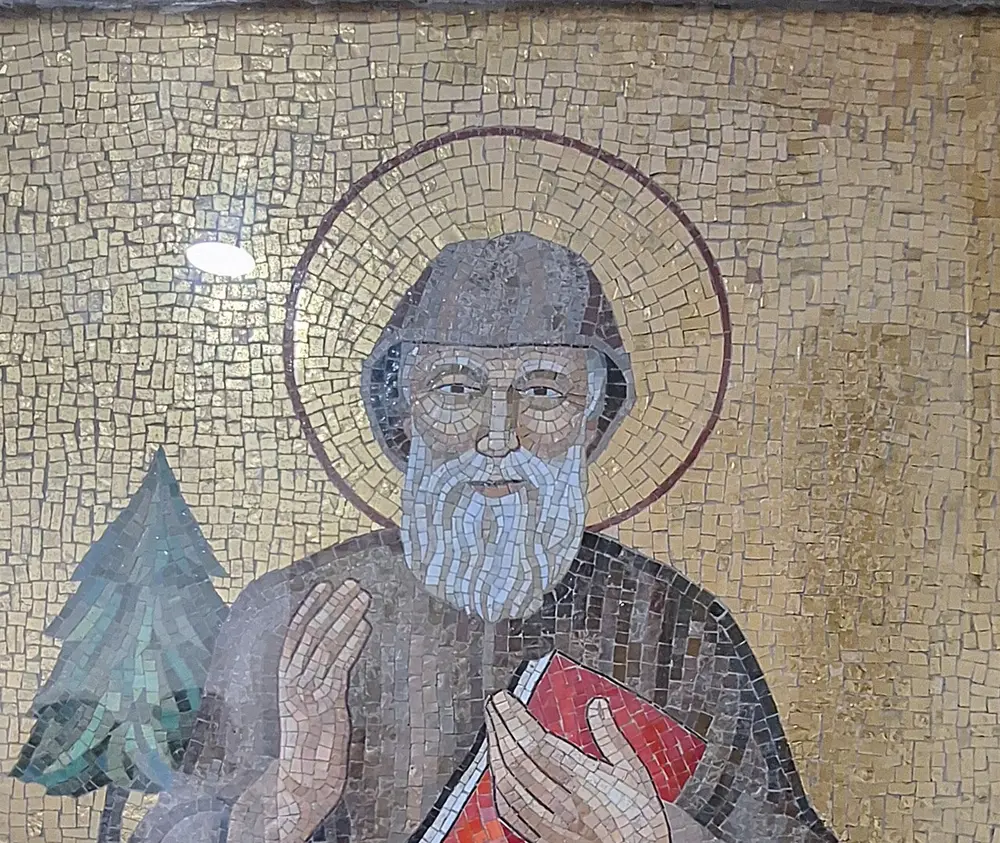

Saint Charbel Prayer for a Miracle
People do not come to Saint Charbel with small requests. They come when the doctors have no more options, when the situation has no human way out - and they ask for a miracle. Here is how the tradition asks: honestly, by name, and without pretending that any prayer forces God's hand.

A Prayer to Saint Charbel for a Miracle
The oldest and most loved miracle prayer to Saint Charbel is the one prayed in the monastery of Annaya's own novena - this is its text as published by the monastery:
"Oh, Miraculous Saint Charbel, from whose immaculate body, which overpowers corruption, emanates the scent of heaven, come to my rescue and grant me from God the grace which I need (name the grace). Amen."
"Oh Lord, who has bestowed on Saint Charbel the grace of faith, I plead to you to grant me through his intercession that divine grace to live according to your commandments and Bible. The glory is yours till the end. Amen."
Pray it slowly, and say plainly what you are asking for. The tradition does not hide the need from God - it names it.
A Short Prayer for an Urgent Intention
For the moment when there is no time for a long prayer. This one is an original composition of this website, written in the tradition of the Church's prayers of intercession:
"Saint Charbel, I am out of options, and I am not out of hope. You spent twenty-three years asking God for nothing but God - so you know how to carry a request to Him. Carry mine: (name your intention). Ask the Lord to do what I cannot do. And if His answer is not the one I beg for, ask Him to hold me up anyway. Amen."
How to Ask
The tradition has a shape, learned at Annaya over a century and more:
- Ask over days, not once. The nine-day novena is the classic way to carry a great intention - the same prayer, the same need, nine days in a row.
- Mark the 22nd. Since Nohad El Shami's healing in 1993, devotees keep the 22nd of every month as Saint Charbel's day - Mass, prayer, and an intention entrusted to him.
- Use the holy oil as a devotion. Blessed oil from Annaya is given freely near the shrine; many anoint the person or intention they pray for. It is an occasion for faith, never a medicine.
- Go to Mass, and to confession. The prayers of the tradition assume a life turned toward God - the miracle you ask for begins, the monks say, with your own conversion.
Miracles Attributed to His Intercession
Two cases this site has covered, both sourced:
- Nohad El Shami (1993). Paralyzed after a stroke, the Lebanese mother of twelve dreamed that Saint Charbel performed surgery on her in the night, and awoke healed on January 22 - the origin of the monthly 22nd pilgrimage. She kept that pilgrimage monthly until her death in May 2025. (Source: CNEWA's account and family interviews.)
- Dafne Gutierrez (Phoenix, 2016). After prayers before a relic of Saint Charbel, the young mother recovered her sight - a case examined by a medical committee headed by Dr. Anne Borik, who has said there was no medical explanation. (Source: Zeale News interview with Dr. Borik, 2026.)
More than 29,000 favors are recorded in the monastery's register at Annaya - see the miracles page for how the Church separates reported cases from formally recognized miracles, and the Letters page for stories in people's own words.
When the Miracle Does Not Come
This must be said, because it is true: most prayers for a miracle are not answered with a miracle, and the tradition has never promised otherwise. Saint Charbel himself died of the stroke that struck him at the altar. Nohad prayed for years before January 1993.
What the tradition promises instead is that no prayer is wasted: the asking itself changes the one who asks, and the same intercession that carries your intention to God can carry you through the answer you did not want. Ask for the miracle with your whole heart - and ask, in the same breath, for the strength to live with God's answer.
Frequently Asked Questions
What is the traditional Saint Charbel miracle prayer?
The best-known is the prayer of the first day of the Annaya monastery's novena: 'Oh, Miraculous Saint Charbel, from whose immaculate body... come to my rescue and grant me from God the grace which I need.' It is quoted above from the monastery's published text.
Can I ask Saint Charbel for a specific miracle?
Yes - the tradition asks plainly and by name. But prayer is not a transaction: no wording, novena, or devotion guarantees the outcome. Ask with trust and leave the answer to God.
How long should I pray for a miracle?
The classic rhythm is the nine-day novena, often repeated, and the monthly 22nd. Many families keep a small daily prayer for years - the tradition honors perseverance more than length.
Do I need the holy oil from Annaya for a miracle?
No. The oil is a devotional aid - an occasion for faith. Miracles recorded at Annaya happened through prayer, not through a formula. If you have the oil, use it with prayer; if you do not, your prayer is no weaker.
How does the Church decide a miracle is real?
Reported healings are examined case by case - medically and theologically. The Church formally recognized miracles through Saint Charbel's intercession for his beatification and canonization; thousands more remain recorded reports at Annaya. The miracles page explains the distinction.
Prayers for Other Needs
Whatever you are carrying, there is a prayer page for it - or search them all in the prayer library.
Sources
- Monastery of Saint Maron, Annaya: Novena of Saint Charbel - the traditional miracle prayer text (Day 1)
- CNEWA: Lebanon's Beloved Saint - Nohad El Shami's healing and the 22nd tradition
- Zeale News (2026): Dr. Anne Borik on the medical examination of Dafne Gutierrez's recovery
- Monastery of Saint Maron, Annaya - the shrine and its register of favors